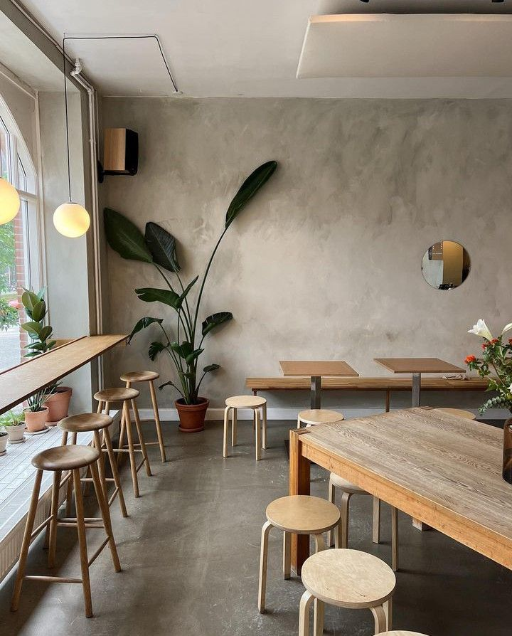

"Talk Coffee" adalah coffee shop bergaya minimalis dengan nuansa natural dan hangat. Interiornya menampilkan dinding semen ekspos, meja kayu panjang, dan kursi tinggi di dekat jendela besar yang memungkinkan cahaya alami masuk.
Dekorasi tanaman hijau menambah kesegaran pada suasana. Lampu gantung modern melengkapi kesan estetik yang nyaman dan cocok untuk bersantai. Desain pintu dan jendela melengkung memberikan sentuhan klasik elegan pada ruang ini.

Bagian outdoor "Talk Coffee" didominasi dinding putih bersih dengan pintu dan jendela kaca melengkung. Area ini memiliki meja-kursi kayu untuk menikmati kopi di luar ruangan. Pencahayaan alami dan dekorasi tanaman menambah kesan hangat dan nyaman.